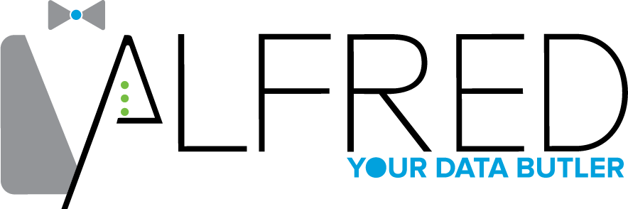

Alfred is a custom data ingestion engine that acts as a gatekeeper to prevent ungoverned data from being loaded into a data lake.
It allows business users to upload and analyze data themselves. Alfred enables the business user to define and implement files for ingestion.
With a simple and intuitive user interface, the customer can provide the file details and submit directly.
This process will automatically perform much of the technical setup and configuration.
This allows user to more quickly determine if data has value and should be promoted to a production process.
The Technology Behind Alfred
Alfred’s set of REST services is a Java 7 Spring Boot project. Java 7 was chosen for compatibility with HDFS edge node Java 7 installs. The UI is a React project. The ingestion scripts are written in Python 2.7. It currently has been tested and operates on Hive, HDFS, and a Unix-based system. It has been tested and operates on the Cloudera Quickstart VM, but it is not at all Cloudera dependent.
Alfred’s Data Flow
There are 3 types of datasets within Alfred: Sandbox, Production and Refined.
- Sandbox: this is where business users will often find themselves. They’ll create a sandbox dataset to discover data. Perhaps they have a csv with data that they may want to use, but they want to see how it would tie to other data before having a scheduled production-stable dataset. This allows them to upload one-off files and discover what they need.
- Production: This is for data that is regularly updated. It will be a production-like job that automatically pulls in new data. This data is validated to verify that what is expected is coming in. This way, your data lake won’t become a data swamp
- Refined: This is where Data Scientists and Analysts can set up information about how they are using the data and what datasets they are creating from the “source” systems. This will capture the lineage of data.